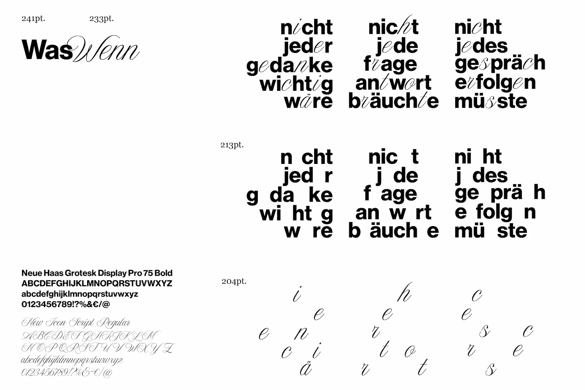
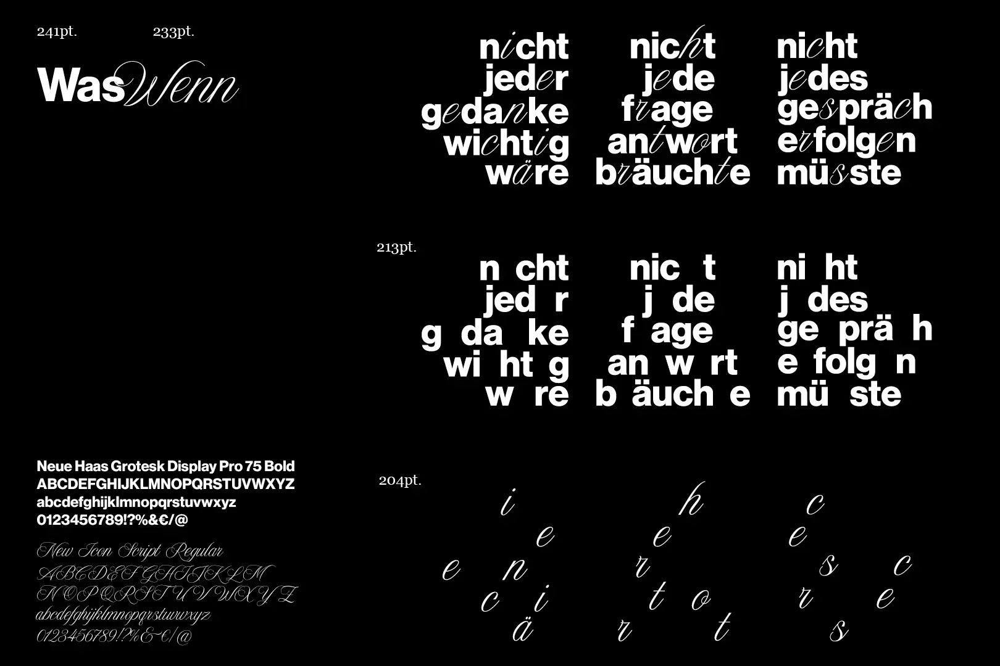

The poster series “ Was Wenn ” deals with the intangible thought processes of an overthinker. The constant question and fear of the occurrence of abstruse events is catching up with more and more people in today’s digitalised world.
A neural network takes the form of a symbolic tunnel that can represent the mental state of an overthinking person,


It was interesting to see how posters can function on their own and as a series, reflecting the conflicted flow of thoughts.